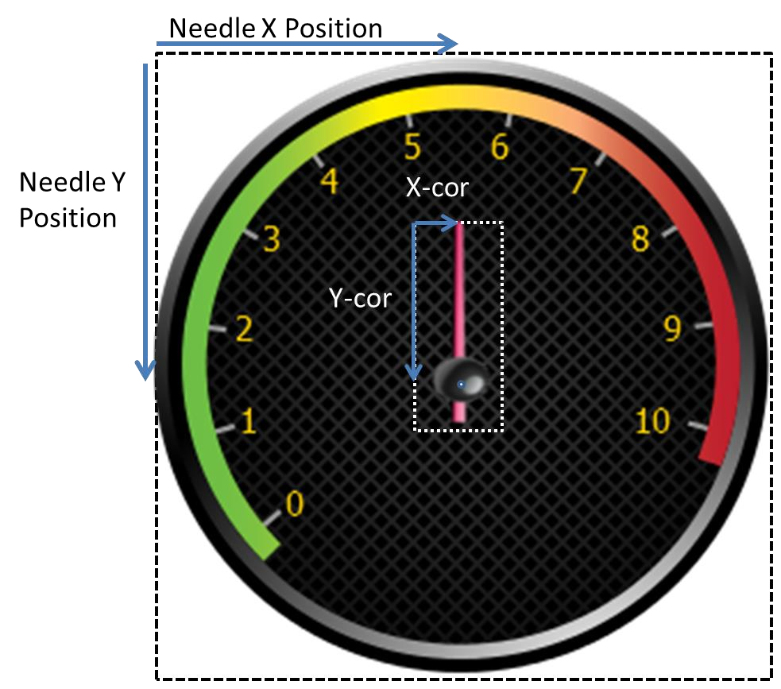

Appendix I - GUIX Information Structures
GX_BIDI_TEXT_INFO
Definition
typedef struct GX_BIDI_TEXT_INFO_STRUCT
{
GX_STRING gx_bidi_text_info_text;
GX_FONT *gx_bidi_text_info_font;
GX_VALUE gx_bidi_text_info_display_width;
} GX_BIDI_TEXT_INFO;| Members | Description | | ----------------------- | --------------------------------------- | | gx_bidi_text_info_text | Text for reordering | | gx_bidi_text_info_font | Font used to display text, set it to GX_NULL if line breaking is not needed | | gx_bidi_text_info_display_width | Available width for displaying, set it to -1 if line breaking is not needed |
GX_BIDI_RESOLVED_TEXT_INFO
Definition
typedef struct GX_BIDI_RESOLVED_TEXT_INFO_STRUCT
{
GX_STRING *gx_bidi_resolved_text_info_text;
UINT gx_bidi_resolved_text_info_total_lines;
struct GX_BIDI_RESOLVED_TEXT_INFO_STRUCT *gx_bidi_resolved_text_info_next;
} GX_BIDI_RESOLVED_TEXT_INFO;| Members | Description |
|---|---|
gx_bidi_resolved_text_info_text |
Pointer to the array of reordered bidi text |
gx_bidi_resolved_text_info_total_lines |
Total lines of resolved bidi text for one paragraph |
gx_bidi_resolved_text_info_next |
Resolved bidi text information for the next paragraph |
GX_CIRCULAR_GAUGE_INFO
Definition
typedef struct GX_CIRCULAR_GAUGE_INFO_STRUCT
{
INT gx_circular_gauge_info_animation_steps;
INT gx_circular_gauge_info_animation_delay;
GX_VALUE gx_circular_gauge_info_needle_xpos;
GX_VALUE gx_circular_gauge_info_needle_ypos;
GX_VALUE gx_circular_gauge_info_needle_xcor;
GX_VALUE gx_circular_gauge_info_needle_ycor;
GX_RESOURCE_ID gx_circular_gauge_info_needle_pixelmap;
} GX_CIRCULAR_GAUGE_INFO;| Members | Description |
|---|---|
gx_circular_gauge_info_animation_steps |
Total steps the needle will travel through when moving from the current needle angle to a newly assigned needle angle |
gx_circular_gauge_info_animation_delay |
The number of GUIX clock ticks to delay between animation steps |
gx_circular_gauge_info_needle_xpos |
The distance from the left of the gauge widget to the center-of-rotation of the gauge needle |
gx_circular_gauge_info_needle_ypos |
The distance from the top of the gauge widget to the center-of-rotation of the gauge needle |
gx_circular_gauge_info_needle_xcor |
The distance from the left of the needle image to the center-of-rotation of the gauge needle |
gx_circular_gauge_info_needle_ycor |
The distance from the top of the needle image to the center-of-rotation of the gauge needle |
gx_circular_gauge_info_needle_pixelmap |
Resource ID of the pixelmap which will be used to draw the gauge needle. This image will be rotated as needed by the gauge widget to display the gauge needle in any position |
The diagram below illustrates the xpos, ypos, and xcor, ycor coordinates:

GX_LINE_CHART_INFO
Definition
typedef struct GX_LINE_CHART_INFO_STRUCT
{
INT gx_line_chart_min_val;
INT gx_line_chart_max_val;
INT *gx_line_chart_data;
GX_VALUE gx_line_left_margin;
GX_VALUE gx_line_top_margin;
GX_VALUE gx_line_right_margin;
GX_VALUE gx_line_bottom_margin;
GX_VALUE gx_line_chart_max_data_count;
GX_VALUE gx_line_chart_active_data_count;
GX_VALUE gx_line_chart_axis_line_width;
GX_VALUE gx_line_chart_data_line_width;
GX_RESOURCE_ID gx_line_chart_axis_color;
GX_RESOURCE_ID gx_line_chart_line_color;
} GX_LINE_CHART_INFO;| Members | Description |
|---|---|
gx_line_chart_min_val |
The minimum data value, which is used to calculate scaling |
gx_line_chart_max_val |
The maximum data value, which is used to calculate scaling |
gx_line_chart_data |
Pointer to an array of integer values. These are the integer values plotted by the line chart widget |
gx_line_<side>_margin |
The offset from the chart window outer bound to the actual chart rendering area. The chart axis and data line are always plotted within this inner boundary, which allows the application to draw labels and other information inside the chart window but outside the char graphing area |
gx_line_chart_max_data_count |
The number of data values which may be present. This parameter is used for calculating the x-axis scaling or interval for plotting data points. |
gx_line_active_data_count |
The number of data values that actually present in the data array. A line chart may be scaled to draw a maximum of 100 values (for example), but on any particular update a smaller number of data values may actually be present. |
gx_line_axis_line_width |
Width of the line used to draw the horizontal and vertical axis |
gx_line_data_line_width |
Width of the plotted data line |
gx_line_chart_axis_color |
Resource ID of the color used to draw the axis lines |
gx_line_chart_line_color |
Resource ID of the color used to draw the chart data line |
GX_MOUSE_CURSOR_INFO
Definition
typedef struct GX_MOUSE_CURSOR_INFO_STRUCT
{
GX_RESOURCE_ID gx_mouse_cursor_image_id;
GX_VALUE gx_mouse_cursor_hotspot_x;
GX_VALUE gx_mouse_cursor_hotspot_y;
} GX_MOUSE_CURSOR_INFO;| Members | Description |
|---|---|
gx_mouse_cursor_image_id |
Resource ID of the mouse image |
gx_mouse_cursor_hotspot_x |
The offset from the left of the mouse image to the mouse image hotspot |
gx_mouse_cursor_hotspot_y |
The offset from the top of the mouse image to the mouse image hotspot |
GX_PEN_CONFIGURATION
Definition
typedef struct GX_PEN_CONFIGURATION_STRUCT
{
GX_FIXED_VAL gx_pen_configuration_min_drag_dist;
UINT gx_pen_configuration_max_pen_speed_ticks;
}GX_PEN_CONFIGURATION;| Members | Description |
|---|---|
gx_pen_configuration_min_drag_dist |
The minimum drag distance per GUIX timer tick to trigger an FLICK event. Call GX_FIXED_VAL_MAKE to make a fixed point data type value |
gx_pen_configuration_max_pen_speed_ticks |
The maximum drag speed in GUIX timer ticks to trigger an FLICK event |
GX_PIXELMAP_SLIDER_INFO
Definition
typedef struct GX_PIXELMAP_SLIDER_INFO_STRUCT
{
GX_RESOURCE_ID gx_pixelmap_slider_info_lower_background_pixelmap;
GX_RESOURCE_ID gx_pixelmap_slider_info_upper_background_pixelmap;
GX_RESOURCE_ID gx_pixelmap_slider_info_needle_pixelmap;
} GX_PIXELMAP_SLIDER_INFO;| Members | Description |
|---|---|
gx_pixelmap_slider_info_lower_background_pixelmap |
Resource ID of the pixelmap for filling the background before the needle. If upper background pixelmap is not set, it’s used for filling background both before and after the needle |
gx_pixelmap_slider_info_upper_background_pixelmap |
Resource ID of the pixelmap for filling background after the needle |
gx_pixelmap_slider_info_needle_pixelmap |
Resource ID of the needle pixelmap |
GX_PROGRESS_BAR_INFO
Definition
typedef struct GX_PROGRESS_BAR_INFO_STRUCT
{
INT gx_progress_bar_info_min_val;
INT gx_progress_bar_info_max_val;
INT gx_progress_bar_info_current_val;
GX_RESOURCE_ID gx_progress_bar_font_id;
GX_RESOURCE_ID gx_progress_bar_normal_text_color;
GX_RESOURCE_ID gx_progress_bar_selected_text_color;
GX_RESOURCE_ID gx_progress_bar_disabled_text_color;
GX_RESOURCE_ID gx_progress_bar_fill_pixelmap;
} GX_PROGRESS_BAR_INFO;| Members | Description |
|---|---|
gx_progress_bar_info_min_val |
Minimum reported value |
gx_progress_bar_info_max_val |
Maximum reported value |
gx_progress_bar_info_current_val |
Current value |
gx_progress_bar_info_font_id |
Resource ID of the font, used to draw the optional text value within the progress bar widget |
gx_progress_bar_normal_text_color |
Resource ID of the text color in normal state, used to define the optional text drawing within the progress bar widget |
gx_progress_bar_selected_text_color |
Resource ID of the text color when the widget gain focus, used to define the optional text drawing within the progress bar widget |
gx_progress_bar_disabled_text_color |
Resource ID of the text color when GX_STYLE_ENABLED is not active, used to define the optional text drawing within the progress bar widget |
gx_progress_bar_fill_pixelmap |
Resource ID of the pixelmap for background filling |
GX_RADIAL_PROGRESS_BAR_INFO
Definition
typedef struct GX_RADIAL_PROGRESS_BAR_INFO_STRUCT
{
GX_VALUE gx_radial_progress_bar_info_xcenter;
GX_VALUE gx_radial_progress_bar_info_ycenter;
GX_VALUE gx_radial_progress_bar_info_radius;
GX_VALUE gx_radial_progress_bar_info_current_val;
GX_VALUE gx_radial_progress_bar_info_anchor_val;
GX_RESOURCE_ID gx_radial_progress_bar_info_font_id;
GX_RESOURCE_ID gx_radial_progress_bar_info_normal_text_color;
GX_RESOURCE_ID gx_radial_progress_bar_info_selected_text_color;
GX_RESOURCE_ID gx_radial_progress_bar_info_disabled_text_color;
GX_VALUE gx_radial_progress_bar_info_normal_brush_width;
GX_VALUE gx_radial_progress_bar_info_selected_brush_width;
GX_RESOURCE_ID gx_radial_progress_bar_info_normal_brush_color;
GX_RESOURCE_ID gx_radial_progress_bar_info_selected_brush_color;
} GX_RADIAL_PROGRESS_BAR_INFO;| Members | Description |
|---|---|
gx_radial_progress_bar_info_xcenter |
Widget position in x coordinate |
gx_radial_progress_bar_info_ycenter |
Widget position in y coordinate |
gx_radial_progress_bar_info_radius |
Radius of the progress circle |
gx_radial_progress_bar_info_current_val |
Current value, limited to the range [-360, 360], indicates the angular delta between the anchor position and the end point of the upper arc. Negative value causes the arc to be drawn in a clockwise direction starting at the anchor position. Positive value causes the arc to be drawn in a counter-clockwise direction starting at the anchor position. The application must scale the real-word value being indicated to assign an angular value to the progress bar widget |
gx_radial_progress_bar_anchor_val |
Starting angle of the upper progress arc. The value is defined in terms of integer degree with 0 degree pointing to the right and 90 degree indicating straight up position. |
gx_radial_progress_bar_font_id |
Resource ID of the font used to draw the optional text value within the progress bar widget |
gx_radial_progress_bar_normal_text_color |
Resource ID of the text color in normal state, used to define the optional text drawing within the progress bar widget |
gx_radial_progress_bar_selected_text_color |
Resource ID of the text color when widget gain focus, used to define the optional text drawing within the progress bar widget |
gx_radial_progress_bar_disabled_text_color |
Resource ID of the text color when GX_STYLE_ENABLED is not active, used to define the optional text drawing within the progress bar widget |
gx_radial_progress_bar_normal_brush_width |
Width of the lower progress circle |
gx_radial_progress_bar_selected_brush_width |
Width of the upper progress arc, the upper arc may be narrower, the same as, or wider than the lower circle |
gx_radial_progress_bar_normal_brush_color |
Resource ID of the color to fill lower progress circle |
gx_radial_progress_bar_selected_brush_color |
Resource ID of the color to fill upper progress arc |
GX_RADIAL_SLIDER_INFO
Definition
typedef struct GX_RADIAL_SLIDER_INFO_STRUCT
{
GX_VALUE gx_radial_slider_info_xcenter;
GX_VALUE gx_radial_slider_info_ycenter;
USHORT gx_radial_slider_info_radius;
USHORT gx_radial_slider_info_track_width;
GX_VALUE gx_radial_slider_info_current_angle;
GX_VALUE gx_radial_slider_info_min_angle;
GX_VALUE gx_radial_slider_info_max_angle;
GX_VALUE *gx_radial_slider_info_angle_list;
USHORT gx_radial_slider_info_list_cont;
GX_RESOURCE_ID gx_radial_slider_info_background_pixelmap;
GX_RESOURCE_ID gx_radial_slider_info_needle_pixelmap;
} GX_RADIAL_SLIDER_INFO;| Members | Description |
|---|---|
gx_radial_slider_info_xcenter |
Distance from the left of the slider widget to the center-of-rotation of the slider needle |
gx_radial_slider_info_ycenter |
Distance from the top of the slider widget to the center-of-rotation of the slider needle |
gx_radial_slider_info_radius |
Radius of the radial slider circle |
gx_radial_slider_info_track_width |
Width of radial slider track |
gx_radial_slider_info_current_angle |
Current slider angle |
gx_radial_slider_info_min_angle |
Minimum slider angle |
gx_radial_slider_info_max_angle |
Maximum slider angle |
gx_radial_slider_info_angle_list |
Angle value list, defines anchor angles, if set, slider angle can only be one of the defined anchor angles |
gx_radial_slider_info_list_count |
Number of anchor angles |
gx_radial_slider_info_background_pixelmap |
Resource ID of background pixelmap |
gx_radial_slider_info_needle_pixelmap |
Resource ID of needle pixelmap |
GX_RECTANGLE
Definition
typedef struct GX_RECTANGLE_STRUCT
{
GX_VALUE gx_rectangle_left;
GX_VALUE gx_rectangle_top;
GX_VALUE gx_rectangle_right;
GX_VALUE gx_rectangle_bottom;
} GX_RECTANGLE;| Members | Description |
|---|---|
gx_rectangle_left |
Left of the rectangle |
gx_rectangle_top |
Top of the rectangle |
gx_rectangle_right |
Right of the rectangle |
gx_rectangle_bottom |
Bottom of the rectangle |
GX_RICH_TEXT_FONTS
Definition
typedef struct GX_RICH_TEXT_FONTS_STRUCT
{
GX_RESOURCE_ID gx_rich_text_fonts_normal_id;
GX_RESOURCE_ID gx_rich_text_fonts_bold_id;
GX_RESOURCE_ID gx_rich_text_fonts_italic_id;
GX_RESOURCE_ID gx_rich_text_fonts_bold_italic_id;
} GX_RICH_TEXT_FONTS;| Members | Description |
|---|---|
gx_rich_text_fonts_normal_id |
Resource ID of normal text font |
gx_rich_text_fonts_bold_id |
Resource ID of bold text font |
gx_rich_text_fonts_italic_id |
Resource ID of italic text font |
gx_rich_text_fonts_bold_italic_id |
Resource ID of bold italic text font |
GX_SCROLL_INFO
Definition
typedef struct GX_SCROLL_INFO_STRUCT
{
INT gx_scroll_value;
INT gx_scroll_minimum;
INT gx_scroll_maximum;
GX_VALUE gx_scroll_visible;
GX_VALUE gx_scroll_increment;
} GX_SCROLL_INFO;| Members | Description |
|---|---|
gx_scroll_value |
Current scroll position |
gx_scroll_minimum |
Minimum reported position |
gx_scroll_maximum |
Maximum reported position |
gx_scroll_visible |
Parent window visible range |
gx_scroll_increment |
Scrollbar minimum delta value |
GX_SCROLLBAR_APPEARANCE
Definition
typedef struct GX_SCROLLBAR_APPEARANCE_STRUCT
{
GX_VALUE gx_scroll_width;
GX_VALUE gx_scroll_thumb_width;
GX_VALUE gx_scroll_thumb_travel_min;
GX_VALUE gx_scroll_thumb_travel_max;
GX_UBYTE gx_scroll_thumb_border_style;
GX_RESOURCE_ID gx_scroll_fill_pixelmap;
GX_RESOURCE_ID gx_scroll_thumb_pixelmap;
GX_RESOURCE_ID gx_scroll_up_pixelmap;
GX_RESOURCE_ID gx_scroll_down_pixelmap;
GX_RESOURCE_ID gx_scroll_thumb_color;
GX_RESOURCE_ID gx_scroll_thumb_border_color;
GX_RESOURCE_ID gx_scroll_button_color;
} GX_SCROLLBAR_APPEARANCE;| Members | Description |
|---|---|
gx_scroll_width |
Width of the scrollbar widget, in pixels |
gx_scroll_thumb_width |
Width of the thumb button which slides on the scrollbar, in pixels. This value is usually some number of pixels less than the total scrollbar width |
gx_scroll_thumb_travel_min |
Offset from the end of scrollbar to minimum thumb button travel point. This limit can be used to prevent the thumb button from traveling to the very end of the scrollbar |
gx_scroll_thumb_travel_max |
Offset from the end of scrollbar to maximum thumb button travel point. This limit can be used to prevent the thumb button from traveling to the very end of the scrollbar |
gx_scroll_thumb_border_style |
Border styles of thumb button |
gx_scroll_fill_pixelmap |
Optional pixelmap ID. If this pixelmap ID is not zero, the scrollbar uses this pixelmap to draw the scrollbar background |
gx_scroll_thumb_pixelmap |
Optional pixelmap ID. If this pixelmap ID is not zero, the scrollbar thumb button uses this pixelmap to draw itself |
gx_scroll_up_pixelmap |
Optional pixelmap ID. If this pixelmap ID is not zero, the scrollbar uses this pixelmap ID to draw the scrollbar left/up end button |
gx_scroll_down_pixelmap |
Optional pixelmap ID. If this pixelmap ID is not zero, the scrollbar uses this pixelmap ID to draw the scrollbar right/down end button |
gx_scroll_thumb_color |
Resource ID of color used to fill thumb button |
gx_scroll_thumb_border_color |
Resource ID of color used to draw the border of thumb button |
gx_scroll_button_color |
Resource ID of color used to fill scrollbar end buttons |
GX_SLIDER_INFO
Definition
typedef struct GX_SLIDER_INFO_STRUCT
{
INT gx_slider_info_min_val;
INT gx_slider_info_max_val;
INT gx_slider_info_current_val;
INT gx_slider_info_increment;
GX_VALUE gx_slider_info_min_travel;
GX_VALUE gx_slider_info_max_travel;
GX_VALUE gx_slider_info_needle_width;
GX_VALUE gx_slider_info_needle_height;
GX_VALUE gx_slider_info_needle_inset;
GX_VALUE gx_slider_info_needle_hotspot_offset;
} GX_SLIDER_INFO;| Members | Description |
|---|---|
gx_slider_info_min_val |
Minimum reported value |
gx_slider_info_max_val |
Maximum reported value |
gx_slider_info_current_value |
Current value |
gx_slider_info_min_travel |
Needle travel limit |
gx_slider_info_max_travel |
Needle travel limit |
gx_slider_info_needle_width |
Needle width in pixel |
gx_slider_info_needle_height |
Needle height in pixel |
gx_slider_info_needle_inset |
Needle draw position. If GX_STYLE_SLIDER_VERTICAL is set, used to specify the offset from the needle draw start position to the slider left. Else, used to specify the offset from the needle draw start position to the slider top. |
gx_slider_info_needle_hotspot_offset |
Needle hotpot_offset, used to specify the offset from the needle draw start position to the slider hotspot. |
GX_SPRITE_FRAME
Definition
typedef struct GX_SPRITE_FRAME_STRUCT
{
GX_RESOURCE_ID gx_sprite_frame_pixelmap;
GX_VALUE gx_sprite_frame_x_offset;
GX_VALUE gx_sprite_frame_y_offset;
UINT gx_sprite_frame_delay;
UINT gx_sprite_frame_background_operation;
UCHAR gx_sprite_frame_alpha;
} GX_SPRITE_FRAME;| Members | Description |
|---|---|
gx_sprite_frame_pixelmap |
Resource ID of the pixelmap to be displayed for this frame. The ID can be 0. |
gx_sprite_frame_x_offset |
Offset from the sprite widget left to display the pixelmap |
gx_sprite_frame_y_offset |
Offset from the sprite widget top to display the pixelmap |
gx_sprite_frame_delay |
Delay value, in GUIX timer ticks, after displaying this frame before advancing to the next sprite frame |
gx_sprite_frame_background_operation |
Define how the background should be erased. Possible values for this field are: |
gx_sprite_frame_alpha |
Alpha value to be added to the displayed pixelmap. The value 255 specifies that no extra alpha value should be imposed. If the pixelmap includes an alpha channel, this alpha channel will be added to the frame alpha value. |